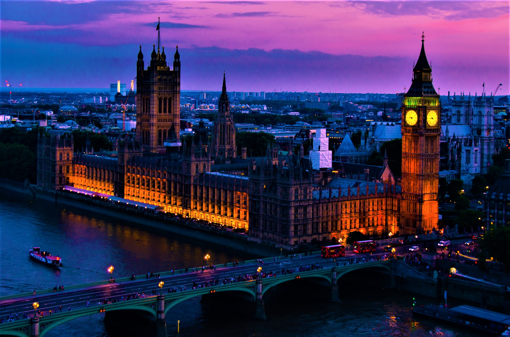

Здание на берегу Темзы в лондонском районе Вестминстер, где проходят заседания Британского парламента.

Биг-Бен (англ. Big Ben) — популярное туристическое название часовой башни Вестминстерского
дворца. Официальное название башни с 2012 года — Башня Елизаветы (англ. Elizabeth Tower)[1].
Изначально «Биг-Бен» являлось названием самого большого из шести колоколов, однако часто
это название расширительно относят и к часам, и к самой часовой башне в целом[2].
На момент отливки Биг-Бен был самым большим и тяжёлым колоколом Соединённого Королевства.
Его вес при этом составлял 13,7 тонны. В 1881 году уступил первенство колоколу
Большой Пол (17 тонн).
В начало документа
Парламент Соединённого Королевства Великобритании и Северной Ирландии (англ. Parliament
of the United Kingdom of Great Britain and Northern Ireland) является высшим законодательным
органом в Соединённом Королевстве и на Королевских заморских территориях. Его не возглавляет
британский монарх, однако является его частью. Парламент двухпалатный, включает в себя верхнюю
палату, называемую палата лордов, и нижнюю палату, называемую палата общин. Палата лордов не
выбирается, она включает в себя лордов духовных (высшее духовенство англиканской церкви),
лордов светских (пэры) и лордов по апелляциям (англ. List of Lords of Appeal), многие из
которых наследовали свою власть. Палата общин, напротив, — демократически избираемая палата,
состоящая из 650 членов, избираемых по мажоритарным округам. Палата лордов и палата общин
собираются в разных помещениях Вестминстерского дворца в Лондоне. По обычаю все министры,
включая премьер-министра, выбираются исключительно из состава парламента.
Парламент эволюционировал из древнего королевского совета. В теории власть исходит не от
парламента, но от «Королевы-в-Парламенте» (англ. Queen-in-Parliament). Часто говорится, что
только Королева-в-Парламенте является верховной властью, хотя это довольно спорное утверждение.
В настоящее время власть исходит также и от демократически избранной палаты общин; в обществе
считается, что монарх действует как представительская фигура, и власть палаты лордов существенно
ограничена. Британский парламент часто в народе называют «матерью всех парламентов», так как
законодательные органы многих стран, а особенно стран-членов Британского Содружества созданы
по его образцу. Но британский парламент не является самым старым, уступая, как минимум, парламенту Исландии.
В начало документа